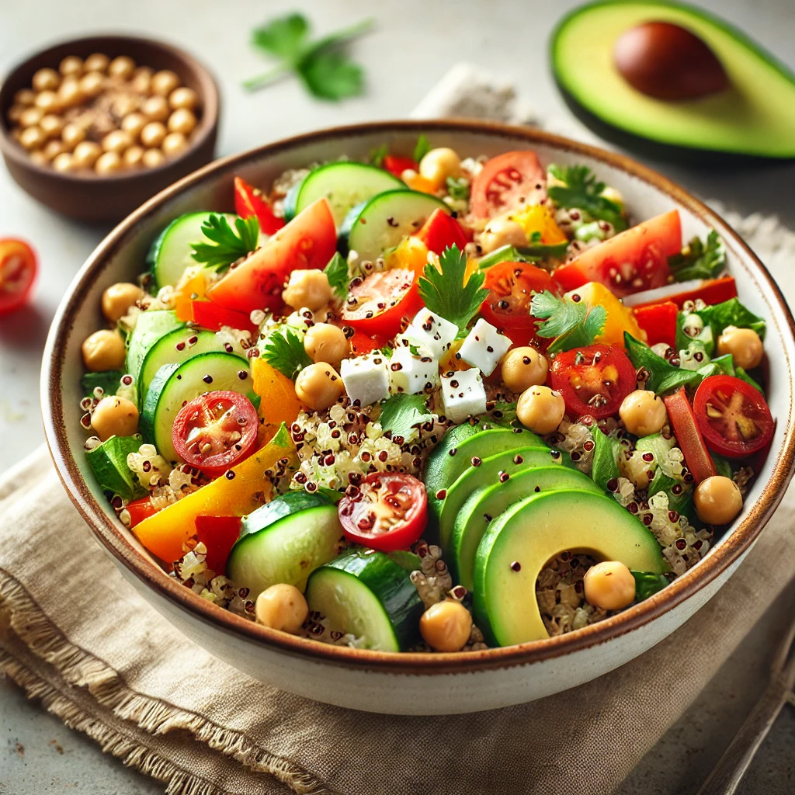

Quinoa Salad

Fresh & Flavourful Quinoa Salad
Looking for a light, nutritious, and delicious meal? This quinoa salad is
the perfect choice! Packed with vibrant veggies, protein-rich quinoa, and
a tangy lemon dressing, it’s a refreshing dish that works as a side or a
satisfying main course.
Ingredients
- 200 g cooked quinoa, cooled
- 100 g cherry tomatoes, halved
- 100 g cucumber, diced
- 50 g red bell pepper, chopped
- 50 g chickpeas, drained and rinsed
- 1/2 avocado, sliced or diced
- 30 g feta cheese, crumbled
- 2 fresh parsley sprigs, chopped
Dressing
- 30 ml olive oil
- 15 ml lemon juice
- 5 ml honey or maple syrup
- 2.5 g salt
- 1 g black pepper
Instructions
-
In a large bowl, combine quinoa, tomatoes, cucumber, bell pepper,
chickpeas, and avocado.
-
In a small bowl, whisk together olive oil, lemon juice, honey, salt, and
pepper.
- Drizzle the dressing over the salad and toss gently.
- Sprinkle with feta cheese and fresh parsley.
- Serve immediately or chill for 15 minutes for more flavor.
Enjoy your fresh and healthy quinoa salad! 😊
Home